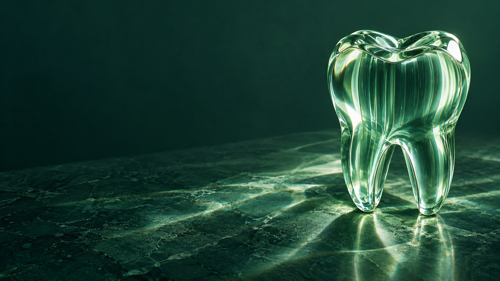
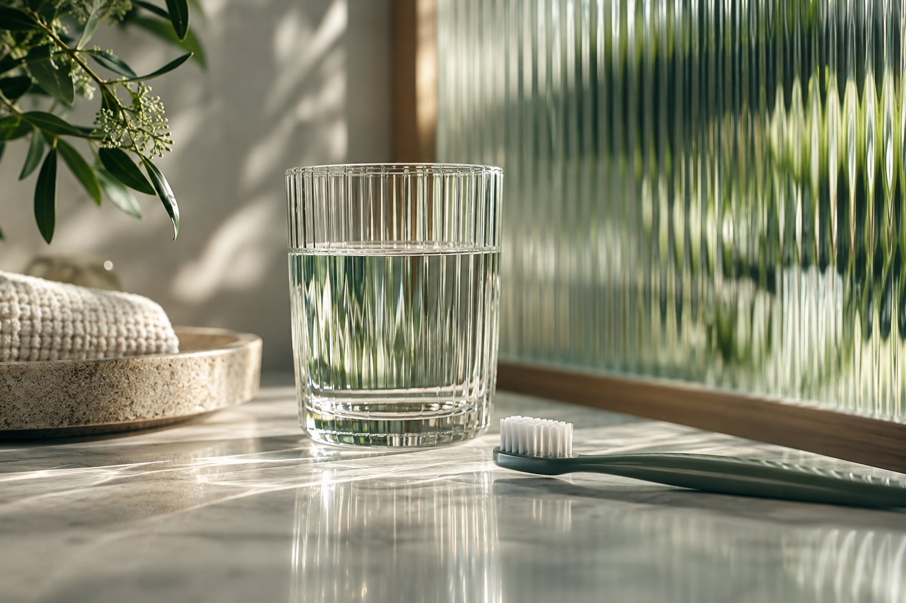
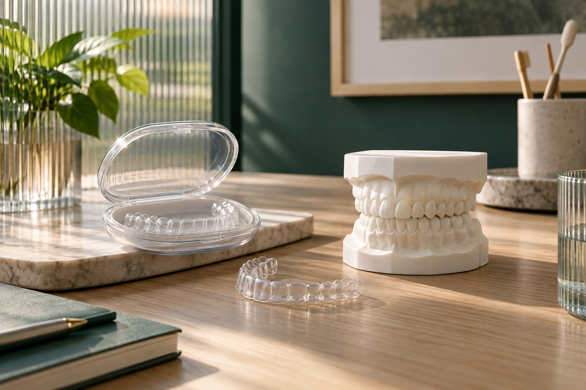

Prisma Odontologia
Um olhar inteiro para o seu sorriso.
Prevenção, ortodontia e cuidado na infância. Conheça as possibilidades e entenda como começa o atendimento.
Encontre seu cuidadoSua primeira visita
Qual cuidado faz sentido para você?
Escolha um assunto para conhecer as possibilidades.

Prevenção e rotina
Conhecer sua rotina e conversar sobre o cuidado é parte de uma avaliação individual. Este espaço apresenta a área de prevenção e abre caminho para o acompanhamento.
O que posso perguntar?
Como funciona a avaliação? Quais etapas e condições serão explicadas antes de decidir?

Ortodontia
Alinhamento, função e acompanhamento são temas para uma conversa individual. A escolha de uma abordagem depende da avaliação profissional e do planejamento para cada pessoa.
O que posso perguntar?
Como funciona a avaliação? Quais etapas e condições serão explicadas antes de decidir?
Cuidado na infância
A primeira experiência merece atenção ao ritmo da criança e espaço para os responsáveis participarem. Uma página própria pode explicar o encontro, o ambiente e as dúvidas da família.
O que posso perguntar?
Como funciona a avaliação? Quais etapas e condições serão explicadas antes de decidir?
O espaço também faz parte do encontro.
Imagem 1 de 3
O que acontece no primeiro encontro?
A proposta demonstrada começa com uma conversa sobre o que você procura, seguida da avaliação e da explicação dos próximos passos. O protocolo real deve ser confirmado com a clínica.
Continuar neste assuntoPreciso saber qual cuidado procurar?
Você pode começar descrevendo sua dúvida. A avaliação profissional ajuda a organizar as possibilidades; não é necessário escolher um tratamento pelo site.
Continuar neste assuntoComo confirmar valores e condições?
A equipe da clínica deverá informar valores, formas de pagamento e condições antes da contratação. Este catálogo não apresenta preços fictícios.
Continuar neste assunto